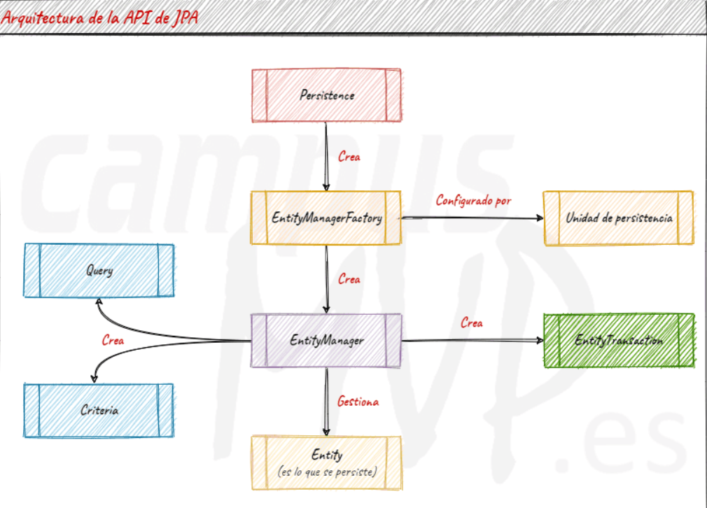
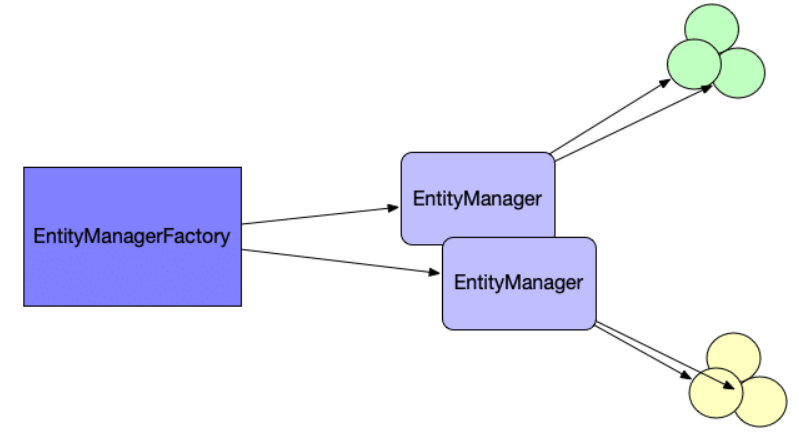

üèõÔ∏è Jakarta ‚Äì JPA (Java Persistence API)
JPA es una especificación que define cómo debe gestionarse la persistencia de objetos en aplicaciones Java.
üëâ Al ser una especificaci√≥n, JPA no es una librer√≠a concreta: necesita un proveedor (implementaci√≥n) como Hibernate, EclipseLink, OpenJPA, etc.
Renombrado: En 2019 Java EE pasó a la Eclipse Foundation y JPA se renombró a Jakarta Persistence. Desde Jakarta Persistence 3.0 (2020), los paquetes cambiaron de
javax.persistenceajakarta.persistence.
ü߆ ¬øQu√© cubre JPA?
- API (interfaces, anotaciones) en
jakarta.persistence - Lenguaje de consultas JPQL (Java Persistence Query Language)
- Metadatos para el mapeo objeto/relacional (anotaciones o XML)
Importante
JPA define interfaces (p. ej., EntityManager), no clases de uso directo. Para usarlas necesitas una implementación (Hibernate, EclipseLink…).
üß± Arquitectura general

Componentes clave:
- Entidades (@Entity): clases cuyo estado queremos guardar en BD.
- EntityManagerFactory (EMF): fábrica de EntityManager. Es pesada, thread‑safe y suele existir una por persistence unit en toda la aplicación.
- EntityManager (EM): gestiona el contexto de persistencia (first‑level cache) y el ciclo de vida de las entidades. No es thread‑safe; se usa por transacción / petición.
- Persistence Context: conjunto de entidades gestionadas (estado managed) que el EntityManager sincroniza con la BD.
üß© Entidades (@Entity)
Para JPA, una entidad es un objeto cuyo estado se persiste en una tabla.
Toda entidad necesita una identidad (PK).
import jakarta.persistence.*;
@Entity
@Table(name = "usuarios")
public class Usuario {
@Id @GeneratedValue(strategy = GenerationType.IDENTITY)
private Long id;
@Column(nullable = false, length = 100)
private String nombre;
@Column(nullable = false, unique = true, length = 150)
private String email;
// getters/setters
}
- Las entidades pueden tener relaciones (
@OneToMany,@ManyToOne,@ManyToMany) y tipos embebidos (@Embeddable). - El diseño de la identidad (PK) es clave para el rendimiento y la igualdad (
equals/hashCode).
üè≠ EntityManagerFactory y EntityManager

-
EMF se crea normalmente al arrancar la aplicación:
Mantén una única instancia (por persistence unit) y ciérrala al apagar la app.EntityManagerFactory emf = Persistence.createEntityManagerFactory("default"); -
EM se crea cuando necesitas operar con datos y no se comparte entre hilos:
EntityManager em = emf.createEntityManager(); try { em.getTransaction().begin(); // ... usar em.persist/merge/find/query em.getTransaction().commit(); } finally { em.close(); }
Regla práctica: EMF = singleton de la app; EM = por petición/uso/tx.
üß∞ Persistence Context (First‑Level Cache)

- El
EntityManagermantiene un conjunto de entidades gestionadas. - La sincronización con la BD ocurre al
commito alflush(). - Dirty checking: si cambias un atributo de una entidad managed, JPA genera el
UPDATEautomáticamente al sincronizar.
Para conseguir que alguno de nuestros objetos pase a ubicarse dentro del PersistenceContext bastará con invocar los métodos persist, merge, sobre él.
Operaciones típicas:
em.persist(ent); // transient -> managed (INSERT en flush/commit)
em.merge(detached);// detached/new -> managed (SELECT/INSERT/UPDATE)
em.remove(ent); // managed -> removed (DELETE en flush/commit)
em.flush(); // fuerza sincronización ahora
em.clear(); // vacía el contexto (pasa managed -> detached)

üîÑ Estados de las entidades
- Transient (new): recién creada con
new, aún no gestionada. - Managed: dentro del
EntityManager; cambios se sincronizan. - Detached: estuvo gestionada, pero ya no (p. ej., tras
clear()o cerrar EM). - Removed: marcada para eliminación; se borrará al sincronizar.
Relación con métodos:
- persist() → new → managed
- remove() → managed → removed
- detach() → managed → detached
- merge() → detached/new → managed
üß™ Fichero de persistencia: persistence.xml
El EntityManagerFactory se configura mediante unidades de persistencia en META-INF/persistence.xml:
<?xml version="1.0" encoding="UTF-8"?>
<persistence xmlns="https://jakarta.ee/xml/ns/persistence"
version="3.0">
<persistence-unit name="default" transaction-type="RESOURCE_LOCAL">
<class>es.severo.entity.Tramite</class>
<properties>
<property name="jakarta.persistence.jdbc.driver" value="com.mysql.cj.jdbc.Driver"/>
<property name="jakarta.persistence.jdbc.url" value="jdbc:mysql://localhost:3306/testdb2"/>
<property name="jakarta.persistence.jdbc.user" value="root"/>
<property name="jakarta.persistence.jdbc.password" value="root"/>
<property name="hibernate.show_sql" value="true"/>
<property name="hibernate.format_sql" value="true"/>
</properties>
</persistence-unit>
</persistence>
Claves del XML
- <persistence-unit name="...">: identifica la unidad; ese nombre se usa en createEntityManagerFactory(...).
- transaction-type:
- RESOURCE_LOCAL → transacciones locales controladas por la app.
- JTA → transacciones gestionadas por un application server.
- <class>: lista de entidades (algunos runtimes permiten auto-scan).
- <properties>: conexión, dialect, DDL, pooling, etc.
Puedes tener varias persistence units si conectas a distintas BDs o necesitas configuraciones separadas.
üîé JPQL y consultas
JPQL consulta entidades y sus atributos, no tablas. JPA traduce JPQL → SQL.
// Búsqueda por email
TypedQuery<Usuario> q = em.createQuery(
"SELECT u FROM Usuario u WHERE u.email = :email", Usuario.class);
q.setParameter("email", "ana@example.com");
Usuario u = q.getSingleResult();
- JOINs siguen las relaciones del modelo:
SELECT p FROM Pedido p JOIN p.usuario u WHERE u.nombre = :n - Actualizaciones masivas:
UPDATE Usuario u SET u.nombre = 'Anon' WHERE u.email LIKE '%@test%' - Criteria API (tipado, dinámico) también está disponible.
⚙️ Transacciones y excepciones
En modo RESOURCE_LOCAL:
em.getTransaction().begin();
try {
// ... operaciones
em.getTransaction().commit();
} catch (RuntimeException ex) {
if (em.getTransaction().isActive()) em.getTransaction().rollback();
throw ex;
}
- Las excepciones de JPA son
RuntimeException, con raíz comúnPersistenceException. - En
JTA, las transacciones las gestiona el contenedor (por ejemplo, usando anotaciones@Transactionalen Jakarta EE/Spring).
üßµ Concurrencia y thread-safety
EntityManagerFactory→ thread‑safe; una instancia por persistence unit.EntityManager→ no thread‑safe; no usar comostaticni compartir entre hilos. Crear por uso/petición/tx.- Cerrar siempre
EntityManageren unfinally(o equivalente del marco).
üß∞ Implementaciones de JPA (providers)
- Hibernate (el más extendido; HQL, gran ecosistema).
- EclipseLink (referencia de Jakarta).
- OpenJPA, DataNucleus, ObjectDB (alcances específicos).
Ventaja de JPA: intercambiabilidad de proveedores con cambios mínimos si sigues la especificación.